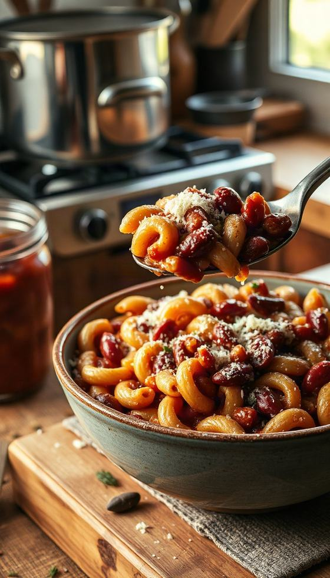
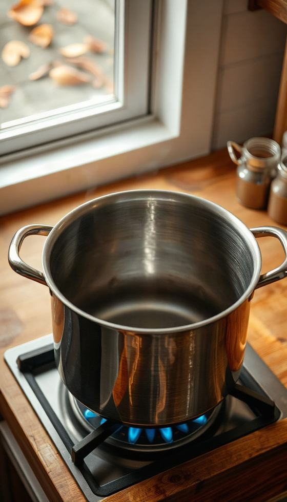
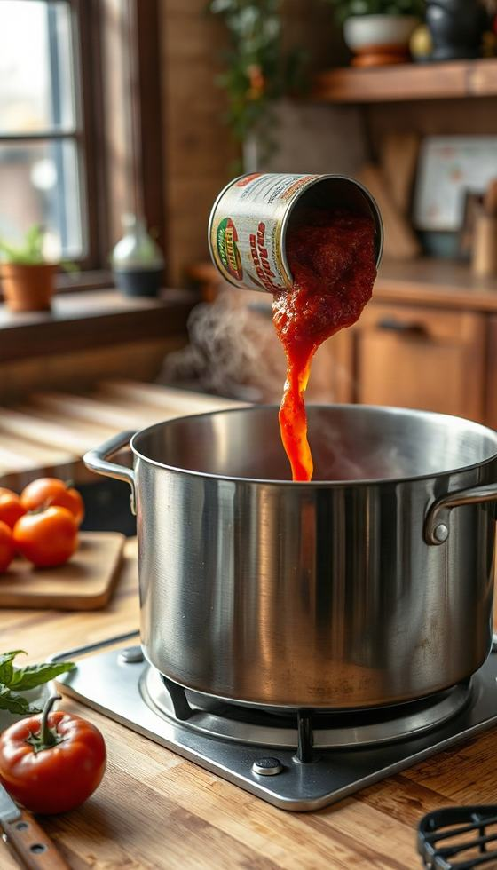
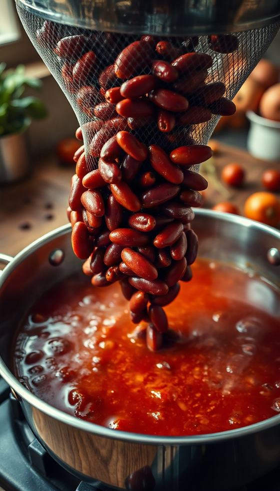
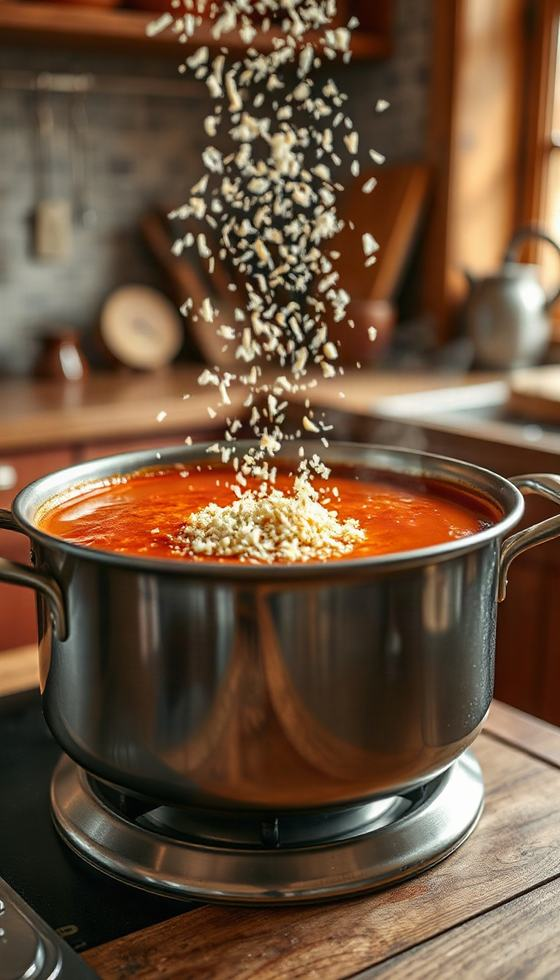

Speedrun
Copycat Olive Garden Pasta e Fagioli
About $4.41* · 4 servings · 20 min
*Prices are estimates and may differ from what you pay. How we price recipes
Olive Garden's pasta e fagioli, copycat style, in one pot and 20 real minutes.





Ingredients
- 1 tbsp vegetable oil
- 1/2 medium onion, diced
- 1 medium carrot, diced
- 1 celery stalk, diced
- 2 garlic cloves, minced
- 1 tsp dried Italian seasoning
- 1 can (398 mL) crushed tomatoes
- 1 L (4 cups) water, boiled in the kettle
- 2 chicken or vegetable bouillon cubes
- 150 g (about 1 cup) ditalini
- 1 can (540 mL) red kidney beans, drained and rinsed
- 10 g (2 tbsp) grated parmesan, for serving
- Salt and black pepper, to taste
Steps
- Minute 0: Start the kettle with 1 L water. Heat the oil in a large pot over medium-high. Dice the onion, carrot and celery and add them to the pot as you go. Cook, stirring, until the onion softens, about 4 minutes total.
- Minute 4: Add the garlic and Italian seasoning and stir 30 seconds until fragrant. Pour in the crushed tomatoes, the hot kettle water and the bouillon cubes. Cover and bring to a full boil, about 2 minutes.
- Minute 7: Uncover. Add the ditalini and the drained, rinsed beans. Mash about a quarter of the beans against the side of the pot with your spoon. Simmer uncovered at a lively bubble for 9 to 10 minutes, stirring every minute so the pasta doesn't stick, until the ditalini is tender.
- Minute 17: Taste. Season with salt and pepper. If it's thicker than you like, add a splash of hot water.
- Minute 19: Ladle into four bowls and top each with parmesan. Serve right away. Refrigerate leftovers within 2 hours and use within 3 to 4 days. The pasta keeps drinking the broth, so add water when reheating, and reheat until steaming hot.
What you'll need
Gear links go to Amazon (Amazon.ca, or Amazon.com in the US). As an Amazon Associate I earn from qualifying purchases, at no extra cost to you.
Watch the videoMore $5 recipes
About the prices: they're estimates, not quotes. Since Nov 2026 they're based on Statistics Canada's monthly average retail prices where an item is listed (Open Government Licence - Canada), otherwise on typical Canadian grocery prices, and count only the amount of each ingredient used, not whole packages. What you pay will vary by store, location, brand, sales, taxes and date, and any pantry staples you need to buy will add to it. Recipe visuals and narration are AI-generated.